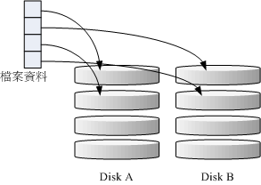
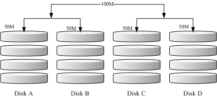

在过去鸟哥还年轻的时代，我们能使用的硬盘容量都不大，几十 GB 的容量就是大硬盘了！但是某些情况下，我们需要很大容量的储存空间，
例如鸟哥在跑的空气品质模式所输出的数据文件一个案例通常需要好几 GB ，连续跑个几个案例，磁碟容量就不够用了。
此时我该如何是好？其实可以透过一种储存机制，称为磁盘阵列
(RAID) 的就是了。这种机制的功能是什么？他有哪些等级？什么是硬件、软件磁盘阵列？Linux 支持什么样的软件磁盘阵列？
底下就让我们来谈谈！
 什么是 RAID
什么是 RAID
磁盘阵列全名是『 Redundant Arrays of Inexpensive Disks, RAID 』，英翻中的意思是：容错式廉价磁盘阵列。
RAID 可以透过一个技术(软件或硬件)，将多个较小的磁碟整合成为一个较大的磁碟装置；
而这个较大的磁碟功能可不止是储存而已，他还具有数据保护的功能呢。整个 RAID 由於选择的等级 (level)
不同，而使得整合后的磁碟具有不同的功能， 基本常见的 level 有这几种(注1)：
- RAID-0 (等量模式, stripe)：效能最佳
这种模式如果使用相同型号与容量的磁碟来组成时，效果较佳。这种模式的 RAID 会将磁碟先切出等量的区块 (举例来说， 4KB)，
然后当一个文件要写入 RAID 时，该文件会依据区块的大小切割好，之后再依序放到各个磁碟里面去。由於每个磁碟会交错的存放数据，
因此当你的数据要写入 RAID 时，数据会被等量的放置在各个磁碟上面。举例来说，你有两颗磁碟组成 RAID-0 ，
当你有 100MB 的数据要写入时，每个磁碟会各被分配到 50MB 的储存量。RAID-0 的示意图如下所示：

图 2.1.1、 RAID-0 的磁碟写入示意图
上图的意思是，在组成 RAID-0 时，每颗磁碟 (Disk A 与 Disk B) 都会先被区隔成为小区块 (chunk)。
当有数据要写入 RAID 时，数据会先被切割成符合小区块的大小，然后再依序一个一个的放置到不同的磁碟去。
由於数据已经先被切割并且依序放置到不同的磁碟上面，因此每颗磁碟所负责的数据量都降低了！照这样的情况来看，
越多颗磁碟组成的 RAID-0 效能会越好，因为每颗负责的数据量就更低了！
这表示我的数据可以分散让多颗磁碟来储存，当然效能会变的更好啊！此外，磁碟总容量也变大了！
因为每颗磁碟的容量最终会加总成为 RAID-0 的总容量喔！
只是使用此等级你必须要自行负担数据损毁的风险，由上图我们知道文件是被切割成为适合每颗磁盘分区区块的大小，
然后再依序放置到各个磁碟中。想一想，如果某一颗磁碟损毁了，那么文件数据将缺一块，此时这个文件就损毁了。
由於每个文件都是这样存放的，因此 RAID-0 只要有任何一颗磁碟损毁，在 RAID
上面的所有数据都会遗失而无法读取。
另外，如果使用不同容量的磁碟来组成 RAID-0 时，由於数据是一直等量的依序放置到不同磁碟中，当小容量磁碟的区块被用完了，
那么所有的数据都将被写入到最大的那颗磁碟去。举例来说，我用 200G 与 500G 组成 RAID-0 ，
那么最初的 400GB 数据可同时写入两颗磁碟 (各消耗 200G 的容量)，后来再加入的数据就只能写入 500G 的那颗磁碟中了。
此时的效能就变差了，因为只剩下一颗可以存放数据嘛！
- RAID-1 (映射模式, mirror)：完整备份
这种模式也是需要相同的磁碟容量的，最好是一模一样的磁碟啦！如果是不同容量的磁碟组成 RAID-1
时，那么总容量将以最小的那一颗磁碟为主！这种模式主要是『让同一份数据，完整的保存在两颗磁碟上头』。举例来说，如果我有一个 100MB
的文件，且我仅有两颗磁碟组成 RAID-1 时， 那么这两颗磁碟将会同步写入 100MB 到他们的储存空间去。
因此，整体 RAID 的容量几乎少了 50%。由於两颗硬盘内容一模一样，好像镜子映照出来一样，
所以我们也称他为 mirror 模式罗～

图 2.1.2、 RAID-1 的磁碟写入示意图
如上图所示，一份数据传送到 RAID-1 之后会被分为两股，并分别写入到各个磁碟里头去。
由於同一份数据会被分别写入到其他不同磁碟，因此如果要写入 100MB 时，数据传送到 I/O 汇流排后会被复制多份到各个磁碟，
结果就是数据量感觉变大了！因此在大量写入 RAID-1 的情况下，写入的效能可能会变的非常差 (因为我们只有一个南桥啊！)。
好在如果你使用的是硬件 RAID (磁盘阵列卡) 时，磁盘阵列卡会主动的复制一份而不使用系统的 I/O 汇流排，效能方面则还可以。
如果使用软件磁盘阵列，可能效能就不好了。
由於两颗磁碟内的数据一模一样，所以任何一颗硬盘损毁时，你的数据还是可以完整的保留下来的！
所以我们可以说， RAID-1 最大的优点大概就在於数据的备份吧！不过由於磁碟容量有一半用在备份，
因此总容量会是全部磁碟容量的一半而已。虽然 RAID-1
的写入效能不佳，不过读取的效能则还可以啦！这是因为数据有两份在不同的磁碟上面，如果多个 processes
在读取同一笔数据时， RAID 会自行取得最佳的读取平衡。
RAID-0 的效能佳但是数据不安全，RAID-1 的数据安全但是效能不佳，那么能不能将这两者整合起来配置 RAID 呢？
可以啊！那就是 RAID 0+1 或 RAID 1+0。所谓的 RAID 0+1 就是： (1)先让两颗磁碟组成 RAID 0，并且这样的配置共有两组；
(2)将这两组 RAID 0 再组成一组 RAID 1。这就是 RAID 0+1 罗！反过来说，RAID 1+0 就是先组成 RAID-1 再组成 RAID-0 的意思。

图 2.1.3、 RAID-0+1 的磁碟写入示意图
如上图所示，Disk A + Disk B 组成第一组 RAID 0，Disk C + Disk D 组成第二组 RAID 0，
然后这两组再整合成为一组 RAID 1。如果我有 100MB 的数据要写入，则由於 RAID 1 的关系，
两组 RAID 0 都会写入 100MB，但由於 RAID 0 的关系，因此每颗磁碟仅会写入 50MB 而已。
如此一来不论哪一组 RAID 0 的磁碟损毁，只要另外一组 RAID 0 还存在，那么就能够透过 RAID 1 的机制来回复数据。
由於具有 RAID 0 的优点，所以效能得以提升，由於具有 RAID 1 的优点，所以数据得以备份。
但是也由於 RAID 1 的缺点，所以总容量会少一半用来做为备份喔！
RAID-5 至少需要三颗以上的磁碟才能够组成这种类型的磁盘阵列。这种磁盘阵列的数据写入有点类似 RAID-0 ，
不过每个循环的写入过程中，在每颗磁碟还加入一个同位检查数据 (Parity) ，这个数据会记录其他磁碟的备份数据，
用於当有磁碟损毁时的救援。RAID-5 读写的情况有点像底下这样：

图 2.1.4、 RAID-5 的磁碟写入示意图
如上图所示，每个循环写入时，都会有部分的同位检查码 (parity) 被记录起来，并且记录的同位检查码每次都记录在不同的磁碟，
因此，任何一个磁碟损毁时都能够藉由其他磁碟的检查码来重建原本磁碟内的数据喔！不过需要注意的是，
由於有同位检查码，因此 RAID 5 的总容量会是整体磁碟数量减一颗。以上图为例，
原本的 3 颗磁碟只会剩下 (3-1)=2 颗磁碟的容量。而且当损毁的磁碟数量大於等於两颗时，这整组 RAID 5 的数据就损毁了。
因为 RAID 5 默认仅能支持一颗磁碟的损毁情况。
在读写效能的比较上，读取的效能还不赖！与 RAID-0 有的比！不过写的效能就不见得能够添加很多！
这是因为要写入 RAID 5 的数据还得要经过计算同位检查码 (parity) 的关系。由於加上这个计算的动作，
所以写入的效能与系统的硬件关系较大！尤其当使用软件磁盘阵列时，同位检查码是透过 CPU 去计算而非专职的磁盘阵列卡，
因此效能方面还需要评估。
另外，由於 RAID 5 仅能支持一颗磁碟的损毁，因此近来还有发展出另外一种等级，就是 RAID 6 ，这个 RAID 6
则使用两颗磁碟的容量作为 parity 的储存，因此整体的磁碟容量就会少两颗，但是允许出错的磁碟数量就可以达到两颗了！
也就是在 RAID 6 的情况下，同时两颗磁碟损毁时，数据还是可以救回来！
当磁盘阵列的磁碟损毁时，就得要将坏掉的磁碟拔除，然后换一颗新的磁碟。换成新磁碟并且顺利启动磁盘阵列后，
磁盘阵列就会开始主动的重建 (rebuild) 原本坏掉的那颗磁碟数据到新的磁碟上！然后你磁盘阵列上面的数据就复原了！
这就是磁盘阵列的优点。不过，我们还是得要动手拔插硬盘，此时通常得要关机才能这么做。
为了让系统可以即时的在坏掉硬盘时主动的重建，因此就需要预备磁碟 (spare disk) 的辅助。
所谓的 spare disk 就是一颗或多颗没有包含在原本磁盘阵列等级中的磁碟，这颗磁碟平时并不会被磁盘阵列所使用，
当磁盘阵列有任何磁碟损毁时，则这颗 spare disk 会被主动的拉进磁盘阵列中，并将坏掉的那颗硬盘移出磁盘阵列！
然后立即重建数据系统。如此你的系统则可以永保安康啊！若你的磁盘阵列有支持热拔插那就更完美了！
直接将坏掉的那颗磁碟拔除换一颗新的，再将那颗新的配置成为 spare disk ，就完成了！
举例来说，鸟哥之前所待的研究室有一个磁盘阵列可允许 16 颗磁碟的数量，不过我们只安装了 10 颗磁碟作为 RAID 5。
每颗磁碟的容量为 250GB，我们用了一颗磁碟作为 spare disk ，并将其他的 9 颗配置为一个 RAID 5，
因此这个磁盘阵列的总容量为： (9-1)*250G=2000G。运行了一两年后真的有一颗磁碟坏掉了，我们后来看灯号才发现！
不过对系统没有影响呢！因为 spare disk 主动的加入支持，坏掉的那颗拔掉换颗新的，并重新配置成为 spare 后，
系统内的数据还是完整无缺的！嘿嘿！真不错！
说的口沫横飞，重点在哪里呢？其实你的系统如果需要磁盘阵列的话，其实重点在於：
- 数据安全与可靠性：指的并非资讯安全，而是当硬件 (指磁碟) 损毁时，数据是否还能够安全的救援或使用之意；
- 读写效能：例如 RAID 0 可以加强读写效能，让你的系统 I/O 部分得以改善；
- 容量：可以让多颗磁碟组合起来，故单一文件系统可以有相当大的容量。
尤其数据的可靠性与完整性更是使用 RAID 的考量重点！毕竟硬件坏掉换掉就好了，软件数据损毁那可不是闹著玩的！
所以企业界为何需要大量的 RAID 来做为文件系统的硬件基准，现在您有点了解了吧？
software, hardware RAID
为何磁盘阵列又分为硬件与软件呢？所谓的硬件磁盘阵列 (hardware RAID) 是透过磁盘阵列卡来达成阵列的目的。
磁盘阵列卡上面有一块专门的芯片在处理 RAID 的任务，因此在效能方面会比较好。在很多任务 (例如 RAID 5 的同位检查码计算)
磁盘阵列并不会重复消耗原本系统的 I/O 汇流排，理论上效能会较佳。此外目前一般的中高阶磁盘阵列卡都支持热拔插，
亦即在不关机的情况下抽换损坏的磁碟，对於系统的复原与数据的可靠性方面非常的好用。
不过一块好的磁盘阵列卡动不动就上万元台币，便宜的在主板上面『附赠』的磁盘阵列功能可能又不支持某些高阶功能，
例如低阶主板若有磁盘阵列芯片，通常仅支持到 RAID0 与 RAID1 ，鸟哥喜欢的 RAID 5 并没有支持。
此外，操作系统也必须要拥有磁盘阵列卡的驱动程序，才能够正确的捉到磁盘阵列所产生的磁碟机！
由於磁盘阵列有很多优秀的功能，然而硬件磁盘阵列卡偏偏又贵的很～因此就有发展出利用软件来模拟磁盘阵列的功能，
这就是所谓的软件磁盘阵列 (software RAID)。软件磁盘阵列主要是透过软件来模拟阵列的任务，
因此会损耗较多的系统资源，比如说 CPU 的运算与 I/O 汇流排的资源等。不过目前我们的个人计算机实在已经非常快速了，
因此以前的速度限制现在已经不存在！所以我们可以来玩一玩软件磁盘阵列！
我们的 CentOS 提供的软件磁盘阵列为 mdadm 这套软件，这套软件会以 partition
或 disk 为磁碟的单位，也就是说，你不需要两颗以上的磁碟，只要有两个以上的分割槽 (partition)
就能够设计你的磁盘阵列了。此外， mdadm 支持刚刚我们前面提到的 RAID0/RAID1/RAID5/spare disk 等！
而且提供的管理机制还可以达到类似热拔插的功能，可以线上 (文件系统正常使用) 进行分割槽的抽换！
使用上也非常的方便呢！
另外你必须要知道的是，硬件磁盘阵列在 Linux 底下看起来就是一颗实际的大磁碟，因此硬件磁盘阵列的装置档名为
/dev/sd[a-p] ，因为使用到 SCSI 的模块之故。至於软件磁盘阵列则是系统模拟的，因此使用的装置档名是系统的装置档，
档名为 /dev/md0, /dev/md1...，两者的装置档名并不相同！不要搞混了喔！因为很多朋友常常觉得奇怪，
怎么他的 RAID 档名跟我们这里测试的软件 RAID 档名不同，所以这里特别强调说明喔！
软件磁盘阵列的配置
软件磁盘阵列的配置很简单呢！简单到让你很想笑喔！因为你只要使用一个命令即可！那就是 mdadm 这个命令。
这个命令在创建 RAID 的语法有点像这样：
[root@www ~]# mdadm --detail /dev/md0
[root@www ~]# mdadm --create --auto=yes /dev/md[0-9] --raid-devices=N \
> --level=[015] --spare-devices=N /dev/sdx /dev/hdx...
选项与参数：
--create ：为创建 RAID 的选项；
--auto=yes ：决定创建后面接的软件磁盘阵列装置，亦即 /dev/md0, /dev/md1...
--raid-devices=N ：使用几个磁碟 (partition) 作为磁盘阵列的装置
--spare-devices=N ：使用几个磁碟作为备用 (spare) 装置
--level=[015] ：配置这组磁盘阵列的等级。支持很多，不过建议只要用 0, 1, 5 即可
--detail ：后面所接的那个磁盘阵列装置的详细资讯
|
上面的语法中，最后面会接许多的装置档名，这些装置档名可以是整颗磁碟，例如 /dev/sdb ，
也可以是分割槽，例如 /dev/sdb1 之类。不过，这些装置档名的总数必须要等於 --raid-devices
与 --spare-devices 的个数总和才行！鸟哥利用我的测试机来建置一个 RAID 5 的软件磁盘阵列给您瞧瞧！
首先，将系统里面过去练习过而目前用不到的分割槽通通删除掉：
[root@www ~]# fdisk -l
Disk /dev/hda: 41.1 GB, 41174138880 bytes
255 heads, 63 sectors/track, 5005 cylinders
Units = cylinders of 16065 * 512 = 8225280 bytes
Device Boot Start End Blocks Id System
/dev/hda1 * 1 13 104391 83 Linux
/dev/hda2 14 1288 10241437+ 83 Linux
/dev/hda3 1289 1925 5116702+ 83 Linux
/dev/hda4 1926 5005 24740100 5 Extended
/dev/hda5 1926 2052 1020096 82 Linux swap / Solaris
/dev/hda6 2053 2302 2008093+ 83 Linux
/dev/hda7 2303 2334 257008+ 82 Linux swap / Solaris
/dev/hda8 2335 2353 152586 83 Linux
/dev/hda9 2354 2366 104391 83 Linux
[root@www ~]# df
Filesystem 1K-blocks Used Available Use% Mounted on
/dev/hda2 9920624 3858800 5549756 42% /
/dev/hda1 101086 21408 74459 23% /boot
tmpfs 371332 0 371332 0% /dev/shm
/dev/hda3 4956316 1056996 3643488 23% /home
# 从上面可以发现，我的 /dev/hda6~/dev/hda9 没有用到！将他删除看看！
[root@www ~]# fdisk /dev/hda
Command (m for help): d
Partition number (1-9): 9
Command (m for help): d
Partition number (1-8): 8
Command (m for help): d
Partition number (1-7): 7
Command (m for help): d
Partition number (1-6): 6
Command (m for help): p
Disk /dev/hda: 41.1 GB, 41174138880 bytes
255 heads, 63 sectors/track, 5005 cylinders
Units = cylinders of 16065 * 512 = 8225280 bytes
Device Boot Start End Blocks Id System
/dev/hda1 * 1 13 104391 83 Linux
/dev/hda2 14 1288 10241437+ 83 Linux
/dev/hda3 1289 1925 5116702+ 83 Linux
/dev/hda4 1926 5005 24740100 5 Extended
/dev/hda5 1926 2052 1020096 82 Linux swap / Solaris
Command (m for help): w
[root@www ~]# partprobe
# 这个动作很重要！还记得吧！将核心的 partition table 升级！
|
底下是鸟哥希望做成的 RAID 5 环境：
- 利用 4 个 partition 组成 RAID 5；
- 每个 partition 约为 1GB 大小，需确定每个 partition 一样大较佳；
- 利用 1 个 partition 配置为 spare disk
- 这个 spare disk 的大小与其他 RAID 所需 partition 一样大！
- 将此 RAID 5 装置挂载到 /mnt/raid 目录下
最终我需要 5 个 1GB 的 partition 。由於鸟哥的系统仅有一颗磁碟，这颗磁碟剩余容量约 20GB 是够用的，
分割槽代号仅使用到 5 号，所以要制作成 RAID 5 应该是不成问题！接下来就是连续的建置流程罗！
如前所述，我需要 5 个 1GB 的分割槽，请利用 fdisk 来建置吧！
[root@www ~]# fdisk /dev/hda
Command (m for help): n
First cylinder (2053-5005, default 2053): <==直接按下 [enter]
Using default value 2053
Last cylinder or +size or +sizeM or +sizeK (2053-5005, default 5005): +1000M
# 上述的动作请作五次！
Command (m for help): p
Disk /dev/hda: 41.1 GB, 41174138880 bytes
255 heads, 63 sectors/track, 5005 cylinders
Units = cylinders of 16065 * 512 = 8225280 bytes
Device Boot Start End Blocks Id System
/dev/hda1 * 1 13 104391 83 Linux
/dev/hda2 14 1288 10241437+ 83 Linux
/dev/hda3 1289 1925 5116702+ 83 Linux
/dev/hda4 1926 5005 24740100 5 Extended
/dev/hda5 1926 2052 1020096 82 Linux swap / Solaris
/dev/hda6 2053 2175 987966 83 Linux
/dev/hda7 2176 2298 987966 83 Linux
/dev/hda8 2299 2421 987966 83 Linux
/dev/hda9 2422 2544 987966 83 Linux
/dev/hda10 2545 2667 987966 83 Linux
# 上面的 6~10 号，就是我们需要的 partition 罗！
Command (m for help): w
[root@www ~]# partprobe
|
接下来就简单啦！透过 mdadm 来创建磁盘阵列先！
[root@www ~]# mdadm --create --auto=yes /dev/md0 --level=5 \
> --raid-devices=4 --spare-devices=1 /dev/hda{6,7,8,9,10}
# 详细的参数说明请回去前面看看罗！这里我透过 {} 将重复的项目简化！
[root@www ~]# mdadm --detail /dev/md0
/dev/md0: <==RAID 装置档名
Version : 00.90.03
Creation Time : Tue Mar 10 17:47:51 2009 <==RAID 被创建的时间
Raid Level : raid5 <==RAID 等级为 RAID 5
Array Size : 2963520 (2.83 GiB 3.03 GB) <==此 RAID 的可用磁碟容量
Used Dev Size : 987840 (964.85 MiB 1011.55 MB) <==每个装置的可用容量
Raid Devices : 4 <==用作 RAID 的装置数量
Total Devices : 5 <==全部的装置数量
Preferred Minor : 0
Persistence : Superblock is persistent
Update Time : Tue Mar 10 17:52:23 2009
State : clean
Active Devices : 4 <==启动的(active)装置数量
Working Devices : 5 <==可动作的装置数量
Failed Devices : 0 <==出现错误的装置数量
Spare Devices : 1 <==预备磁碟的数量
Layout : left-symmetric
Chunk Size : 64K <==就是图2.1.4内的小区块
UUID : 7c60c049:57d60814:bd9a77f1:57e49c5b <==此装置(RAID)识别码
Events : 0.2
Number Major Minor RaidDevice State
0 3 6 0 active sync /dev/hda6
1 3 7 1 active sync /dev/hda7
2 3 8 2 active sync /dev/hda8
3 3 9 3 active sync /dev/hda9
4 3 10 - spare /dev/hda10
# 最后五行就是这五个装置目前的情况，包括四个 active sync 一个 spare ！
# 至於 RaidDevice 指的则是此 RAID 内的磁碟顺序
|
由於磁盘阵列的建置需要一些时间，所以你最好等待数分钟后再使用『 mdadm --detail /dev/md0 』去查阅你的磁盘阵列详细资讯！
否则有可能看到某些磁碟正在『spare rebuilding』之类的建置字样！透过上面的命令，
你就能够创建一个 RAID5 且含有一颗 spare disk 的磁盘阵列罗！非常简单吧！
除了命令之外，你也可以查阅如下的文件来看看系统软件磁盘阵列的情况：
[root@www ~]# cat /proc/mdstat
Personalities : [raid6] [raid5] [raid4]
md0 : active raid5 hda9[3] hda10[4](S) hda8[2] hda7[1] hda6[0] <==第一行
2963520 blocks level 5, 64k chunk, algorithm 2 [4/4] [UUUU] <==第二行
unused devices: <none>
|
上述的数据比较重要的在特别指出的第一行与第二行部分(注2)：
- 第一行部分：指出 md0 为 raid5 ，且使用了 hda9, hda8, hda7, hda6 等四颗磁碟装置。每个装置后面的中括号 []
内的数字为此磁碟在 RAID 中的顺序 (RaidDevice)；至於 hda10 后面的 [S] 则代表 hda10
为 spare 之意。
- 第二行：此磁盘阵列拥有 2963520 个block(每个 block 单位为 1K)，所以总容量约为 3GB，
使用 RAID 5 等级，写入磁碟的小区块 (chunk) 大小为 64K，使用 algorithm 2 磁盘阵列演算法。 [m/n]
代表此阵列需要 m 个装置，且 n 个装置正常运行。因此本 md0 需要 4 个装置且这 4 个装置均正常运行。
后面的 [UUUU] 代表的是四个所需的装置 (就是 [m/n] 里面的 m) 的启动情况，U 代表正常运行，若为 _ 则代表不正常。
这两种方法都可以知道目前的磁盘阵列状态啦！
接下来就是开始使用格式化工具啦！这部分就简单到爆！不多说了，直接进行吧！
[root@www ~]# mkfs -t ext3 /dev/md0
# 有趣吧！是 /dev/md0 做为装置被格式化呢！
[root@www ~]# mkdir /mnt/raid
[root@www ~]# mount /dev/md0 /mnt/raid
[root@www ~]# df
Filesystem 1K-blocks Used Available Use% Mounted on
/dev/hda2 9920624 3858820 5549736 42% /
/dev/hda1 101086 21408 74459 23% /boot
tmpfs 371332 0 371332 0% /dev/shm
/dev/hda3 4956316 1056996 3643488 23% /home
/dev/md0 2916920 69952 2698792 3% /mnt/raid
# 看吧！多了一个 /dev/md0 的装置，而且真的可以让你使用呢！还不赖！
|
模拟 RAID 错误的救援模式
俗话说『天有不测风云、人有旦夕祸福』，谁也不知道你的磁盘阵列内的装置啥时会出差错，因此，
了解一下软件磁盘阵列的救援还是必须的！底下我们就来玩一玩救援的机制吧！首先来了解一下 mdadm
这方面的语法：
[root@www ~]# mdadm --manage /dev/md[0-9] [--add 装置] [--remove 装置] \
> [--fail 装置]
选项与参数：
--add ：会将后面的装置加入到这个 md 中！
--remove ：会将后面的装置由这个 md 中移除
--fail ：会将后面的装置配置成为出错的状态
|
首先，我们来处理一下，该如何让一个磁碟变成错误，然后让 spare disk 自动的开始重建系统呢？
# 0. 先复制一些东西到 /mnt/raid 去，假设这个 RAID 已经在使用了
[root@www ~]# cp -a /etc /var/log /mnt/raid
[root@www ~]# df /mnt/raid ; du -sm /mnt/raid/*
Filesystem 1K-blocks Used Available Use% Mounted on
/dev/md0 2916920 188464 2580280 7% /mnt/raid
118 /mnt/raid/etc <==看吧！确实有数据在里面喔！
8 /mnt/raid/log
1 /mnt/raid/lost+found
# 1. 假设 /dev/hda8 这个装置出错了！实际模拟的方式：
[root@www ~]# mdadm --manage /dev/md0 --fail /dev/hda8
mdadm: set /dev/hda8 faulty in /dev/md0
[root@www ~]# mdadm --detail /dev/md0
....(前面省略)....
State : clean, degraded, recovering
Active Devices : 3
Working Devices : 4
Failed Devices : 1 <==出错的磁碟有一个！
Spare Devices : 1
....(中间省略)....
Number Major Minor RaidDevice State
0 3 6 0 active sync /dev/hda6
1 3 7 1 active sync /dev/hda7
4 3 10 2 spare rebuilding /dev/hda10
3 3 9 3 active sync /dev/hda9
5 3 8 - faulty spare /dev/hda8
# 看到没！这的动作要快做才会看到！ /dev/hda10 启动了而 /dev/hda8 死掉了
[root@www ~]# cat /proc/mdstat
Personalities : [raid6] [raid5] [raid4]
md0 : active raid5 hda9[3] hda10[4] hda8[5](F) hda7[1] hda6[0]
2963520 blocks level 5, 64k chunk, algorithm 2 [4/3] [UU_U]
[>.......] recovery = 0.8% (9088/987840) finish=14.3min speed=1136K/sec
|
上面的画面你得要快速的连续输入那些 mdadm 的命令才看的到！因为你的 RAID 5 正在重建系统！
若你等待一段时间再输入后面的观察命令，则会看到如下的画面了：
# 2. 已经藉由 spare disk 重建完毕的 RAID 5 情况
[root@www ~]# mdadm --detail /dev/md0
....(前面省略)....
Number Major Minor RaidDevice State
0 3 6 0 active sync /dev/hda6
1 3 7 1 active sync /dev/hda7
2 3 10 2 active sync /dev/hda10
3 3 9 3 active sync /dev/hda9
4 3 8 - faulty spare /dev/hda8
[root@www ~]# cat /proc/mdstat
Personalities : [raid6] [raid5] [raid4]
md0 : active raid5 hda9[3] hda10[2] hda8[4](F) hda7[1] hda6[0]
2963520 blocks level 5, 64k chunk, algorithm 2 [4/4] [UUUU]
|
看吧！又恢复正常了！真好！我们的 /mnt/raid 文件系统是完整的！并不需要卸载！很棒吧！
首先，我们再创建一个新的分割槽，这个分割槽要与其他分割槽一样大才好！然后再利用 mdadm
移除错误的并加入新的！
# 3. 创建新的分割槽
[root@www ~]# fdisk /dev/hda
Command (m for help): n
First cylinder (2668-5005, default 2668): <==这里按 [enter]
Using default value 2668
Last cylinder or +size or +sizeM or +sizeK (2668-5005, default 5005): +1000M
Command (m for help): w
[root@www ~]# partprobe
# 此时系统会多一个 /dev/hda11 的分割槽喔！
# 4. 加入新的拔除有问题的磁碟
[root@www ~]# mdadm --manage /dev/md0 --add /dev/hda11 --remove /dev/hda8
mdadm: added /dev/hda11
mdadm: hot removed /dev/hda8
[root@www ~]# mdadm --detail /dev/md0
....(前面省略)....
0 3 6 0 active sync /dev/hda6
1 3 7 1 active sync /dev/hda7
2 3 10 2 active sync /dev/hda10
3 3 9 3 active sync /dev/hda9
4 3 11 - spare /dev/hda11
|
嘿嘿！你的磁盘阵列内的数据不但一直存在，而且你可以一直顺利的运行 /mnt/raid 内的数据，即使 /dev/hda8
损毁了！然后透过管理的功能就能够加入新磁碟且拔除坏掉的磁碟！注意，这一切都是在上线 (on-line) 的情况下进行！
所以，您说这样的咚咚好不好用啊！ ^_^
启动自动启动 RAID 并自动挂载
新的 distribution 大多会自己搜寻 /dev/md[0-9] 然后在启动的时候给予配置好所需要的功能。不过鸟哥还是建议你，
修改一下配置档吧！ ^_^。software RAID 也是有配置档的，这个配置档在 /etc/mdadm.conf ！这个配置档内容很简单，
你只要知道 /dev/md0 的 UUID 就能够配置这个文件啦！这里鸟哥仅介绍他最简单的语法：
[root@www ~]# mdadm --detail /dev/md0 | grep -i uuid
UUID : 7c60c049:57d60814:bd9a77f1:57e49c5b
# 后面那一串数据，就是这个装置向系统注册的 UUID 识别码！
# 开始配置 mdadm.conf
[root@www ~]# vi /etc/mdadm.conf
ARRAY /dev/md0 UUID=7c60c049:57d60814:bd9a77f1:57e49c5b
# RAID装置 识别码内容
# 开始配置启动自动挂载并测试
[root@www ~]# vi /etc/fstab
/dev/md0 /mnt/raid ext3 defaults 1 2
[root@www ~]# umount /dev/md0; mount -a
[root@www ~]# df /mnt/raid
Filesystem 1K-blocks Used Available Use% Mounted on
/dev/md0 2916920 188464 2580280 7% /mnt/raid
# 你得确定可以顺利挂载，并且没有发生任何错误！
|
如果到这里都没有出现任何问题！接下来就请 reboot 你的系统并等待看看能否顺利的启动吧！ ^_^
关闭软件 RAID(重要！)
除非你未来就是要使用这颗 software RAID (/dev/md0)，否则你势必要跟鸟哥一样，将这个 /dev/md0 关闭！
因为他毕竟是我们在这个测试机上面的练习装置啊！为什么要关掉他呢？因为这个 /dev/md0 其实还是使用到我们系统的磁盘分区槽，
在鸟哥的例子里面就是 /dev/hda{6,7,8,9,10,11}，如果你只是将 /dev/md0 卸载，然后忘记将 RAID 关闭，
结果就是....未来你在重新分割 /dev/hdaX 时可能会出现一些莫名的错误状况啦！所以才需要关闭 software RAID 的步骤！
那如何关闭呢？也是简单到爆炸！(请注意，确认你的 /dev/md0 确实不要用且要关闭了才进行底下的玩意儿)
# 1. 先卸载且删除配置档内与这个 /dev/md0 有关的配置：
[root@www ~]# umount /dev/md0
[root@www ~]# vi /etc/fstab
/dev/md0 /mnt/raid ext3 defaults 1 2
# 将这一行删除掉！或者是注解掉也可以！
# 2. 直接关闭 /dev/md0 的方法！
[root@www ~]# mdadm --stop /dev/md0
mdadm: stopped /dev/md0 <==不罗唆！这样就关闭了！
[root@www ~]# cat /proc/mdstat
Personalities : [raid6] [raid5] [raid4]
unused devices: <none> <==看吧！确实不存在任何阵列装置！
[root@www ~]# vi /etc/mdadm.conf
ARRAY /dev/md0 UUID=7c60c049:57d60814:bd9a77f1:57e49c5b
# 一样啦！删除他或是注解他！
|
Tips:
在这个练习中，鸟哥使用同一颗磁碟进行软件 RAID 的实验。不过朋友们要注意的是，如果真的要实作软件磁盘阵列，
最好是由多颗不同的磁碟来组成较佳！因为这样才能够使用到不同磁碟的读写，效能才会好！
而数据分配在不同的磁碟，当某颗磁碟损毁时数据才能够藉由其他磁碟挽救回来！这点得特别留意呢！
|  |